Malware removal and troubleshooting information
This guide lists resources to fix common issues with browsers, along with removing malware from Windows, MacOS, Android, and GNU/Linux systems. This guide is intended for home users.
Last updated: 4/5/2024
Warning: This is a work in progress!
Always read all steps before doing anything as to avoid missing vital information. Thank you.
Table of contents
Things not to do
- Do not use "cleaner" programs to clear browser cache/cookies. These programs may cause problems with your browser. Use your browser settings to clear cookies and cache.
- Do not use registry cleaners! They are useless (snake oil) and can cause problems.
- I would recommend against using TronScript/Tron
Easy solutions
My security software keeps detecting an infection in Chrome
- If you log into a Google account in Chrome, it will sync your settings, browser extensions, history, and other data. This may be convenient for some but may cause unwanted settings and browser extensions to keep being restored from the cloud. In order to address this issue, clear all synced data.
I'm getting messages saying I am infected or hacked!
- If you get an email or text message saying you have been hacked, it is a scam. Do not pay or communicate with the person.
- If the email contains your password (or a password you used in the past), change that password
- If you see a popup on your screen: Close it
- If you see notifications or alerts at the bottom/top of your screen: Remove them
My searches are being redirected
Something keeps appending the letter g to applications (i.e. renaming chrome.exe to gchrome.exe) or my security software detected something called Neshta
My security software detected something called Expiro
Neshta and Expiro are
viruses; they replace legitimate applications with copies of themselves. Due to this, no system infected with these viruses
can be cleaned. You need to backup your data (only documents,
do not backup executables, games, or applications) and
reinstall your system. Be aware Neshta also infects USB drives/hard drives connected to the infected system. Expiro also infects executables (applications) on
all connected drives. After reinstalling,
scan your device and all external drivesMy security software detects malware in C:\$RECYCLE.BIN\
This is the recycle bin; everything in it should have already been deleted
Clear your recycle bin
If that does not work:[1]
- This will clear the recycle bins for every user!
- Search for Command Prompt in the Windows search
- Right click on it and click "Run as administrator"
- Accept the User Account Control prompt
- Type
rd /s /q C:\$Recycle.bin and press enter
- Restart Windows
- Rescan with your security software
My device is slow
There are many reasons computers slow down; malware is only one. Additionally, stealthier malware will have little effect on system performance.
Fake antivirus alerts
While browsing the internet, you may see websites which claim your system is infected with malware.
Examples
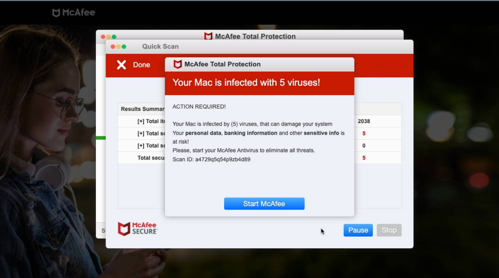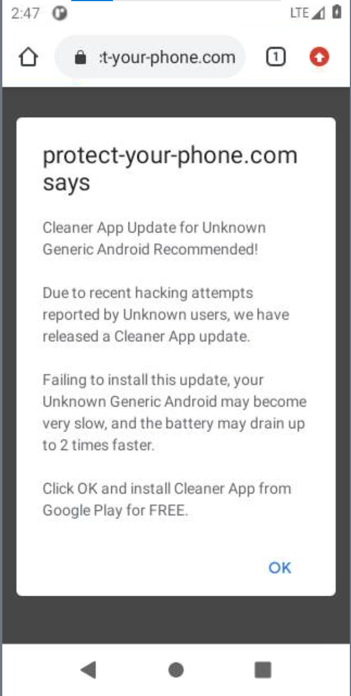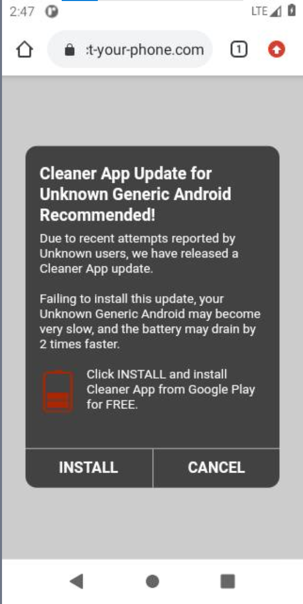
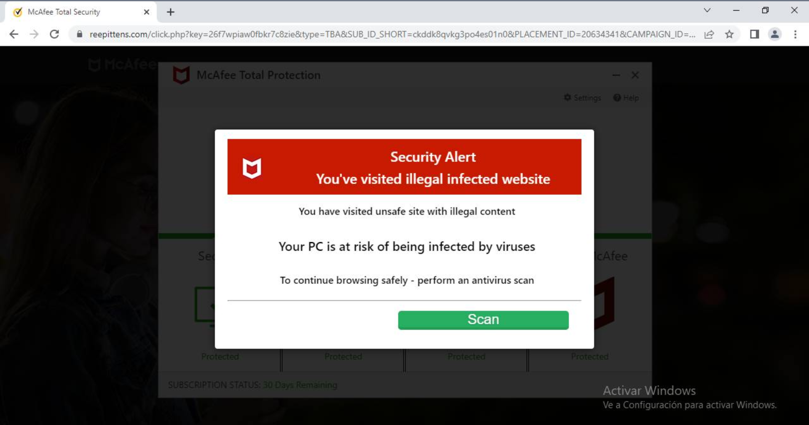
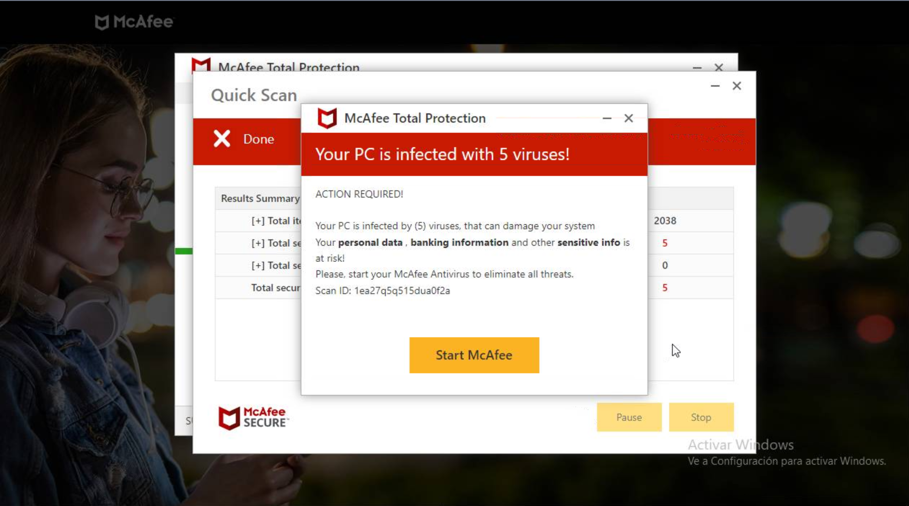
Do not interact with these websites. They are
scams. If you see one of these:
- Press the escape (labeled esc on some keyboards) key to exit full screen
- On iOS: Press the x at the top left corner of the screen
- On iOS: Swipe down to exit full screen
- On Android: Drag from the top of your screen until you see the controls. Then, press the back button.
- On Android: Drag from the bottom of your screen until you see the controls, then click the back button.
- On Android: Going to the lock screen seems to kick websites out of full screen.
- Press
F11 (press the function key - fn on most keyboards - and the key labeled F11)
- Note: Websites can not activate the F11 fullscreen mode
- Press and hold down the Control (ctrl) key and press w to close the tab.
- On Apple Macs, press and hold down on the Command key and press w
- I think that when using a Windows keyboard with a Mac, you would press Windows key (the key in the bottom right corner with the Windows icon) and w. If someone uses this configuration, please check if I am right.
- If you get a message asking if you want to stay on the website, click No or Leave page
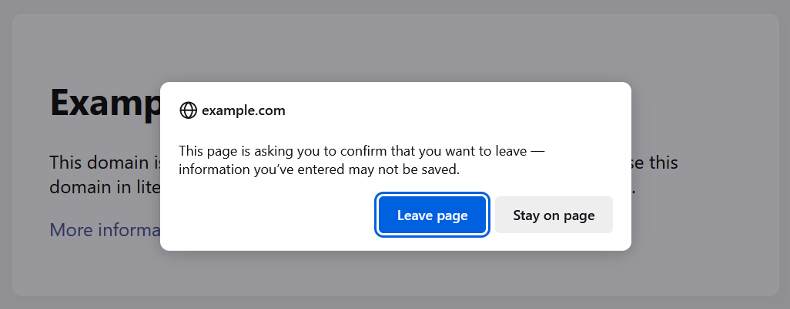
- Older iOS devices: Press the home button. Then clear cache, cookies, and history. Be aware this will log you out of all websites, close all open tabs, and remove all history.
- Older iOS devices: Press the home button twice, then swipe up on the Safari window to close Safari. Then clear cache, cookies, and history. Be aware this will log you out of all websites, close all open tabs, and remove all history.
- Windows: Press Alt-F4 (Hold down the Alt key while pressing the function key labeled F4) to close the current app
- Desktop Firefox and Chrome/Edge/Brave/all Chromium browsers: To close the current window, press Control-Shift-W (Windows, GNU/Linux) or Command-Shift-W (MacOS)
- Desktop Firefox: To fully quit Firefox, press Control-Shift-Q (hold down the Control and Shift keys while pressing the letter Q) or Command-Q (hold down the command key while pressing the letter Q)
- Windows (if needed):
- Press Control-Alt-Delete
- Select "Task Manager"
- Tip: You can also open Task Manager by pressing down the Control, Shift, and Escape keys
- Find your browser
- Tip: Click More details or press Alt and D to see more processes and an expanded view
- Close your browser by:
- Clicking on it, and then clicking End task
- Right-clicking on it, and then selecting End task in the menu which appears

- Clicking on it, and then pressing Alt and e
- Click "End Task"
- Tip: You can close Task Manager by pressing the Escape key
- MacOS: Force quit your browser (force quit any app by pressing
Option-Command-Esc on your keyboard)
- If these alerts appear on your screen even when your browser is closed, or appear as notifications, follow these steps to remove them.
Last resort: Turn off or reboot your device
- MacOS: Shut down or restart your Mac
- iOS: Press and hold the power button, slide the power off.
- New iOS devices: Should that fail, hold down the power button and the volume down button at the same time.
- Older iOS devices: Should that fail, press and hold down the home button and the power button until the screen turns off.
- Android: Depends on the vendor. On most, press and hold down the power button, then select "Reboot" or "Restart".
- Windows: Press
Control-Alt-Delete, then click the power icon and click "Reboot".
In some cases, these scam "warnings" may be ads on other websites instead of full page fake alerts:
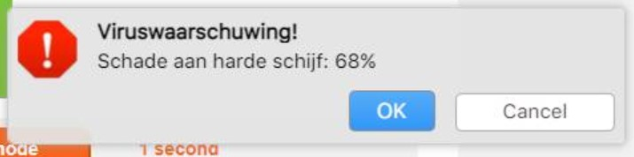
If that is the case, no action is required.
If you wish to get rid of these ads, install software to block ads,
such as uBlock Origin.
Remove spam notifications
Malicious websites can send you spammy notifications, such as fake warnings about malware:
![A Chrome notification. The top of the notification is red and grey, and reads 'MALWARE FOUND! System Message. Click SCAN to preform a scan and remove malwares [sic]' and displays the McAfee icon. The body of the notification is titled YOUR DATA HAS BEEN STOLEN and reads 'Click here to secure your data!'. There are two buttons; Remove Ads and Open.](img/spam notification 1.jpg)

Revoke the ability to send notifications for all but sites which need it and which you trust:
If that does not work or you want to be sure, clear your browser cache and site data, which should remove the code which is causing these issues.
Clear browser cache and cookies
Warning: This will sign you out of websites
Change search engine and homepage/new tab
Some malware will only change your homepage/new tab or search engine and will not prevent you from changing it back.
Homepage/new tab:
Search engine:
If your browser says the homepage or search engine is managed by an extension, follow the instructions below to uninstall that extension. If that does not work, try resetting browser sync and removing policies (Windows only).
Uninstall a specific browser extension
If a specific extension is causing problems, you can uninstall it:
Can not remove a browser extension
If you are unsure what extensions to uninstall, see if you have any of the extensions listed below installed, and if so, try uninstalling them. You also can try disabling all your extensions and turning them back on one-by-one to see which one is causing the problem.
Known malicious browser extensions
If installed, I recommend you remove these. However, this is not an exhaustive list.
- "Browsing Overview by Securify" Changes your search engine to
search[.]mysecurify[.]com, which redirects to Bing.
In general, it is best to use as few browser extensions as possible. Also, only use browser extensions you can trust.
Rules for browser extensions:
- Any website which tells you to install a browser extension in order to prove you are human, watch a video, continue to another website, remove a "virus" or malware, or some similar reason is fake. Just close the tab and never visit it again.
- Read carefully though any permission requests, and only give browser extensions access to what they need to function. Think to yourself: does this align with this extension's purpose? A content blocker needs to access all websites to block ads, trackers, etc. A weather extension doesn't, though it may need your location.
- Is the browser extension open source?
- It also does not mean the extension will stay open source forever.
- However, it is a good start.
- I would recommend you avoid browser extensions which are not open source.
- Browser extension authors often sell their extensions to shady companies or outright malware authors: The Case for Limiting Your Browser Extensions
- Shady companies will pay browser extension developers to include malware in their extensions: Browser extensions spy on you, even if its developers don't (archived) (from https://github.com/hagezi/dns-blocklists/discussions/1515)
- I would recommend against using McAfee Web Advisor, at least at the moment. Back in 2022, I found a vulnerability in it which allowed any website to detect if is installed. That vulnerability still exists and is being used by attackers[8]
General advice on browser troubleshooting
Chrome: https://support.google.com/chrome/answer/2765944
Safari (MacOS): https://support.apple.com/HT203987
Remove a theme
Themes should not be able to do anything bad, and thus are highly unlikely to be malware. However, should you want to remove them, here is how:
Reset browser sync
Many browsers now can sync data between devices. This feature sadly has the side effect of causing unwanted browser changes to reappear, even after being removed. Be aware that clearing your sync data probably will cause some synced data to be lost. Be sure to save any important data (i.e. passwords) securely outside your browser just in case.
If you want to use Sync, I would strongly recommend securing it
Multi Factor Authentication (recommended)
Add a password
Note this is not the same as the password of your account. This is an added layer of security.
Disable session restore
Session restore (while helpful) can automatically reopen problematic pages.
Remove a proxy
A proxy is another computer or software which sits between you and the website you are accessing. There are many legitimate uses for proxies. However, if you do not use one, you may want to check if one has been set by malware:
Reset the HOSTs file
GNU/Linux, Windows, MacOS, and many other operating systems have a special file called the HOSTs file which lets you tell your computer where to find specific websites. This also means you can tell your computer that a website doesn't exist. Many people use this to block ads, trackers, or malware. However, malware can use this to block websites hosting security software.
After resetting your HOSTs file, reboot your device.
Change your DNS server
Fix problems updating
Fix hijacked shortcuts (Windows)
If your browser keeps opening unwanted websites, it could be that the shortcuts you use to open your browser have been hijacked. Below are three methods to fix this.
Method 1
This method will delete and recreate the taskbar shortcut.
- Right click on your browser's icon in your taskbar
- Click "Unpin from taskbar":
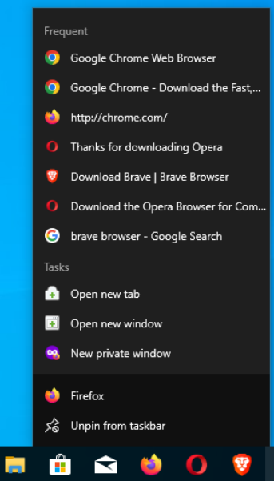
- Search for your browser in Windows search or open it via another method (i.e. a desktop shortcut)
- Once it opens, right click on it's icon in the taskbar and click "Pin to taskbar":

Method 2
This method will clean any shortcuts in your desktop.
- Right click on the desktop shortcut
- Click "Properties"
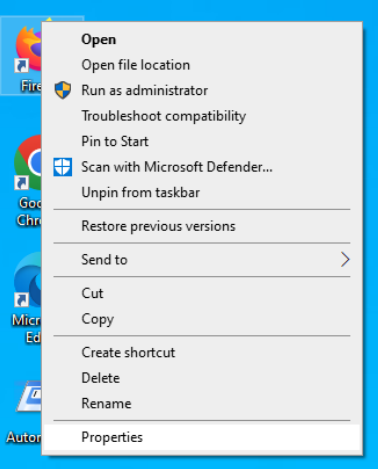
- Click the "Target" box and delete everything after the name of the browser and the last double-quote:
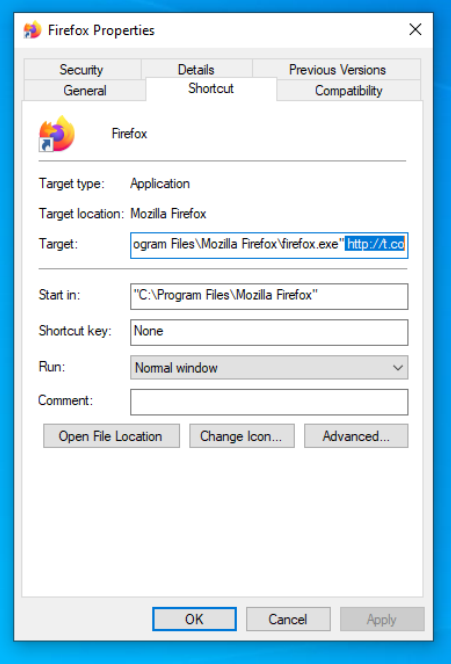
- Delete all the selected text. Remember: Do not delete anything before the double-quote and browser name
- Click "Apply"
- If you get this error, click "Continue" and accept the UAC prompt if needed

Method 3
- Open the start menu
- Find your browser
- Right click on it:
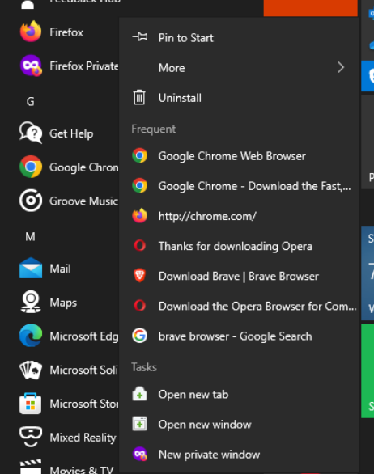
- Hover over "More" and click "Open file location":

- Right click on the shortcut (Windows should already select the proper shortcut)
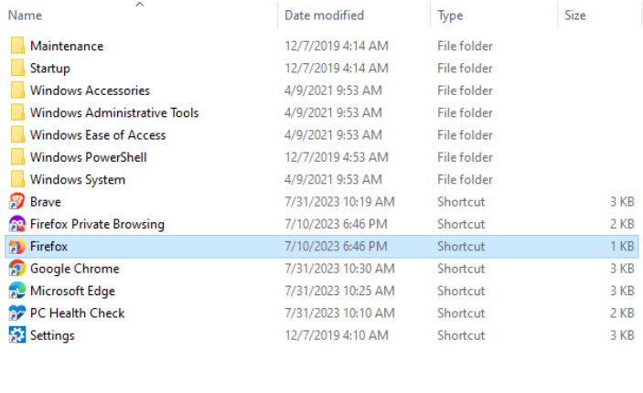
- Click "Properties"
- Click the "Target" box and delete everything after the name of the browser and the last double-quote:
- Delete all the selected text. Remember: Do not delete anything before the double-quote and browser name
- Click "Apply"
- If you get this error, click "Continue" and accept the UAC prompt if needed
Misc issues
Incorrect time/date
If you get security errors when visiting websites, your clock may be incorrect.
Broken search
Android home screen taken over by malware
On Android, it is possible for an app to set it's self as your home screen. Essentially, when you log into your phone, you will see that app instead of your normal home screen.
Various Mac problems
- If you are unable to turn on your Mac, your Mac crashes or freezes, or you have sound/external monitor issues, you should try resetting your Non-Volatile Random Access Memory (NVRAM): How to reset NVRAM on a Mac
Repair Windows Defender
Try disabling Fast Startup and restart Windows
Check for and install all available updates
- I would recommand against installing "Cumulative Update Previews" as
Try uninstalling all other antimalware software
Try running a full scan with the Microsoft Safety Scanner. Restart Windows afterword.
Follow these instructions to run the System File Checker
If Windows Defender's UI keeps crashing while viewing protection logs, try clearing the protection logs: 4 Ways to Clear the Microsoft Defender Protection History on Windows 10 & 11
Clear Windows Defender temporary files using Disk Cleanup
- Close all other apps, including open instances of Windows Defender's settings
- Search for cleanmgr.exe in the Windows search
- Right-click on it and select Run as administrator
- Accept the User Account Control prompt
- Note: if it asks what device to clean, select whatever drive Windows is installed to
- Note: Windows is often installed to C
- The following window should open:
![The cleanmgr.exe window, which is titled 'Disk Cleanup for OS (C:)'. There are two tabs; 'Disk Cleanup' and 'More Options'. 'Disk Cleanup' is selected. The window reads 'You can use Disk Cleanup to free up to 3.01 GB of disk space on OS (C:)'. The options to delete are: 'Microsoft Defender Antivirus', 'Windows upgrade log files', 'Downloaded Program Files', 'Temporary Internet Files', 'System error memory dump files', 'System error minidump files', 'Windows error reports and feedback', 'DirectX Shader Cache', 'Delivery Optimization Files', 'Recycle Bin', 'Temporary files', and 'Thumbnails'. The window has two buttons on the Window; OK and Cancel.](img/cleanmgr.png "The cleanmgr.exe window, which is titled 'Disk Cleanup for OS (C:)'.
There are two tabs; 'Disk Cleanup' and 'More Options'. 'Disk Cleanup' is selected. The window reads 'You can use Disk Cleanup to free up to 3.01 GB of disk space on OS (C:)'.
The options to delete are: 'Microsoft Defender Antivirus', 'Windows upgrade log files', 'Downloaded Program Files', 'Temporary Internet Files', 'System error memory dump files', 'System error minidump files', 'Windows error reports and feedback', 'DirectX Shader Cache', 'Delivery Optimization Files', 'Recycle Bin', 'Temporary files', and 'Thumbnails'.
The window has two buttons on the Window; OK and Cancel.")
- Uncheck all options other than Microsoft Defender Antivirus
- Click the OK button.
- Confirm by clicking Delete Files
- Restart Windows
Remove policies for Windows Defender
- If the above failed to fully restore Windows Defender, follow the below steps to enable the Windows Defender service and remove all policies
- Warning: This will remove all policies for Windows Defender, including legitimate ones
- Search for Command Prompt or cmd.exe in the Windows Search
- Right click on it and click Run as administrator
- Accept the User Account Control prompt
- Type
reg delete "HKEY_LOCAL_MACHINE\SOFTWARE\Policies\Microsoft\Windows Defender" /f and press enter
- Type
reg delete "HKLM\SOFTWARE\Policies\Microsoft\Windows Defender Security Center" /f
- Note: If you get an
Access is denied error for any of the below commands, that is not necessarily a problem. If Windows Defender is working, it will block access to these services.
- Note: If any the commands below return the error
The specified service does not exist as an installed service., then the services used by Windows Defender have been deleted. You should try the in-place repair upgrade. If that fails, you can either ask for help on a tech support/malware removal forum or just reinstall Windows.
- Type
sc config windefend start=auto and press enter
- Type
sc config SecurityHealthService start=demand and press enter
- Close Command Prompt and restart Windows
Use PowerShell to configure Windows Defender
- Search for PowerShell in the Windows search
- Right-click on PowerShell and click Run as administrator
- Accept the User Account Control prompt
- Type
Set-MpPreference -UILockdown $false and press enter
- Type
Update-MpSignature and press enter. Wait for the command to complete
- This command will update Windows Defender's signatures
- Internet access is required. If you lack internet access, skip this command.
- Close PowerShell and restart Windows
Repair the WMI
Follow these instructions to preform an in-place repair upgrade
Repair Windows Update
First, close all apps and restart Windows. Allow any pending updates to be installed.
Before attempting to remove malware
Malware removal guides
Malware removal guide websites
- MalwareTips: https://malwaretips.com/blogs/
- Their guides are all pretty much the same.
- They use Hitman Pro, which allows you to scan for free but requires a license to remove malware.
- Their website is behind CloudFlare, so do not expect privacy
Preinstalled malware
Android
Known malware/PUPs
Known malware and untrustworthy software. I would recommend removing any of the software listed below before cleaning your system.
All operating systems
- TotalAV, TotalAdBlock, PCProtect, and ScanGuard (all made by the same company)
- Reimage Repair (how to remove)
- Anything from IObit
Android
- Super Skibydi Killer[1]
- Agent Shooter[1]
- Rainbow Stretch[1]
- Rubber Punch 3D[1]
- GazEndow Economic[2]
- Beauty Wallpaper HD[2]
Windows
MacOS
Malware removal forums
There is no shame in asking for help.
Boot into safe mode
Windows
- Note: Windows Safe Mode is far from foolproof. There are numerous ways for malware to run in safe mode if it wants to.
Technical information
- Warning: Do not mess with the windows registry unless you know what you are doing. The information below is for technical users, and for educational purposes.
- Malware add itself to the
shell value under HKEY_LOCAL_MACHINE\SOFTWARE\Microsoft\Windows NT\CurrentVersion\Winlogon
- The shell is basically what displays the taskbar, start menu, and desktop
- The default shell in Windows is explorer.exe, which is also file explorer
- This key controls what shell Windows uses
- A program can outright replace this value, which means that program will load instead of your desktop
- A program can also append itself to this value, which means explorer.exe starts and your desktop loads normally, but the program also silently starts in the background
- RunOnce keys can sometimes start in safe mode
- Start your PC in safe mode in Windows
MacOS
Android
No one malware removal tool can clean a system. I would recommend you run at least three. However, while running too many shouldn't harm your system, it also is unneeded. If your hard drive is failing, avoid running any of these tools as they may push it over the edge.
Tip: If these tools detect 100+ infections, I'd recommend just reinstalling your operating system.
- Windows:
- All of these programs are free. Some may advertise their paid software, but it is not needed
- Sadly, none of these are libre software
- If you are unable to download this software, see the section above.
- Adwcleaner: https://support.malwarebytes.com/hc/articles/360038520054-Download-and-install-Malwarebytes-AdwCleaner
- For more information: Scan and clean a device with AdwCleaner (Behind CloudFlare)
- I would recommand following this guide: Scan with AdwCleaner
- If you notice the AdwCleaner window looks broken and is missing it's fonts, close and reopen AdwCleaner:

- If the problem persists, delete and redownload AdwCleaner
- Do not remove any of the "preinstalled software" unless you know what you are doing; it is not malware.
- About the settings: Application tab overview for AdwCleaner
- I would recommend you turn off "usage and threat statistics"
- Malwarebytes does not provide phone support for home users. Any phone number supposedly for Malwarebytes Support is either for business customers or (more likely) is a scam.
- Emsisoft Emergency Kit: https://www.emsisoft.com/home/emergency-kit/
- It is recommended you run the full scan.
- Be sure to update after installing
- If it does not work, delete
C:\EEK and try to install it again
- Kaspersky: https://www.kaspersky.com/downloads/free-virus-removal-tool
- ESET Online Scanner: https://download.eset.com/com/eset/tools/online_scanner/latest/esetonlinescanner.exe
- Sophos Scan and Clean:
- Malwarebytes: https://www.malwarebytes.com/api/downloads/mb-windows?filename=MBSetup.exe
- Note: The latest version of Malwarebytes is version 5, but the older version 4 is still supported.
- If that didn't work: Download it with a different filename
- Offline installer: https://downloads.malwarebytes.com/file/mb5_offline
- Install Malwarebytes version 4 if version 5 does not work: https://downloads.malwarebytes.com/file/mb4_offline
- If you use Windows 7 and are unable to install Malwarebytes, try this installer: https://downloads.malwarebytes.com/file/mb4_sha-1 (there is not a SHA-1 installer for Malwarebytes 5)
- You do not need to buy it! The free version can remove malware just as well as the paid one.
- It will come with a trial version:
- The real-time protection may conflict with your security software:
- Note: Some of the guides below only have instructions for Malwarebytes 4
- You can disactivate the trial: Deactivate Premium Trial in Malwarebytes for Windows v4
- You can turn off real-time protection:
-
- Or if you want the real time protection (which is not needed to clean your system), you can exclude Malwarebytes from your security software and vice versa: Add Malwarebytes to the allow list on other apps
- I would recommend you go into the "Notifications" panel of the settings and turn off "Show promotional messages from Malwarebytes". This will make Malwarebytes less annoying. You also may want to disable "Help fight Malware by sending usage and threat statistics".
- Despite what some so-called "antivirus testers" have been recommending, you should not enable the "Block penetration testing attacks" setting. This will cause problems with many major applications. This setting (oddly) seems to exist to test if the exploit protection is functioning. However, this is not explained in the UI, and makes no sense with the description "block penetration testing".
- You do not need to do a custom scan of your entire C:\ drive. The threat scan is enough
- I would strongly recommend you unregister it from the Windows Security Center, as to avoid disabling Windows Defender
- While the default scan settings are enough for normal usage, I would recommend enabling the "Scan for rootkits" option on badly infected systems:
- You can uninstall Malwarebytes once you are done
- If you want to keep Malwarebytes installed, be sure to reset the scan settings to default. The Scan for rootkits setting may cause problems, and is unneeded on uninfected/lightly infected systems.
- Malwarebytes does not provide phone support for home users. Any phone number supposedly for Malwarebytes Support is either for business customers or (more likely) is a scam.
- Windows Defender:
- If Windows Defender does not work, run the Microsoft Safety Scanner: Microsoft Safety Scanner Download
- Be sure to run the Full scan!
- Be aware that the Microsoft Safety Scanner may show detections during the scan. This is normal and does not mean you are infected. All that matters is the result at the end.
- There is no point in running this in addition to Windows Defender
- Note: If you use third party antimalware (anything other than Windows Defender), the Microsoft Safety Scanner may detect
VirTool:Win32/DefenderTamperingRestore. This does not mean your system is infected.
- Android:
- I have little experience removing malware from Android, and lack an environment to test in. Thus, I do not know what the best security software for Android is.
- Malwarebytes: https://play.google.com/store/apps/details?id=org.malwarebytes.antimalware
- It seems you now need to share payment information and agree to the trial, even to do a free scan
[12]
. Thus, I find it hard to recommend their Android product. The Windows and MacOS versions should still be free.
- MacOS:
- MacOS systems can (and do) get infected with malware[1][2].
- ClamAV: Install
- I have never used ClamAV on MacOS and I do not know how good it is.
- GNU/Linux:
- Despite common belief, GNU/Linux systems can be infected with malware, and there is malware infecting home users.
- chkrootkit: https://www.chkrootkit.org/
- ClamAV:
- iOS:
- iOS malware is very rare outside targeted attacks
- If you are reading a page on GitHub about how to fix problems with your computer, you probably aren't someone who would be targeted.
- If you are indeed targeted, you should seek help from an expert, not a page on GitHub
- There is no antivirus/antimalware/malware removal tools for iOS, as Apple does not allow apps to have the level of access required. Any application claiming to detect or remove iOS malware is a scam.
- Any message claiming your phone is infected with malware is fake. Any text message or email claiming your phone is infected is a scam.
- For those who are likely to be targeted: Lockdown Mode
- This is far beyond the scope of this page and my knowledge
Uninstall security software
You may need to remove broken/malfunctioning security software.
Fix browsers not opening
Hacked account
Do not try to recover a hacked account from an infected device.
Be aware: there are a lot of scammers who claim they can recover your account if you pay them. They can not.
Remove browser policies (Windows)
Before doing this, close all browsers. Open regedit and delete these keys:
- Edge (current user):
- HKEY_CURRENT_USER\SOFTWARE\Policies\Microsoft\Edge
- HKEY_CURRENT_USER\SOFTWARE\WOW6432Node\Policies\Microsoft\Edge
- Edge (system) - you will need to run regedit as admin:
- HKEY_LOCAL_MACHINE\SOFTWARE\Policies\Microsoft\Edge
- HKEY_LOCAL_MACHINE\SOFTWARE\WOW6432Node\Policies\Microsoft\Edge
- Chrome (current user):
- HKEY_CURRENT_USER\SOFTWARE\Policies\Google\Chrome
- Chrome (system) - you will need to run regedit as admin:
- HKEY_LOCAL_MACHINE\SOFTWARE\Policies\Google\Chrome
- Chrome policy removal tool:
https://www.stefanvd.net/project/chrome-policy-remover/ (there is also one for MacOS, but I cannot speak to its safety or effectiveness)
- Internet Explorer: HKEY_LOCAL_MACHINE\SOFTWARE\Policies\Microsoft\Internet Explorer
- Firefox: HKEY_LOCAL_MACHINE\SOFTWARE\Policies\Mozilla\Firefox
After doing this, restart your device
Script to kill all browsers (Windows)
I wrote a script to kill most browsers on Windows.
- Download it
- Right-click on it, and click "Run as administrator"
- Windows may block it. If needed, click "More info", then click "Run anyway"
Images


Reset your browser
Reinstall your browser
Uninstall
Repair Microsoft Edge on Windows
- Type appwiz.cpl into the Windows search
- Click on "appwiz.cpl":
- Scroll down until you see Microsoft Edge:

- Click on it, then click "Change":
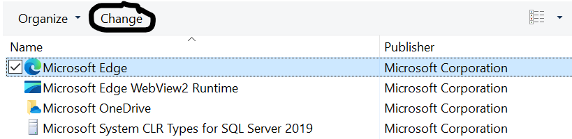
- Click "repair" and wait

Reinstall
Problems installing
Wireless router security
- For the intents and purposes of this guide, I will refer to residential WLAN gateways as wireless routers, even through they are not technically routers.
- Disclaimer: my knowledge on networking is very limited. If you are more experenced and noticed mistakes, please contact me.
- Removing malware from routers: https://routersecurity.org/#HackedRouter
- A guide on resetting routers, if needed (read the source above first>): https://www.howtogeek.com/434350/how-to-factory-reset-a-router/
- Information on securing your router: routersecurity.org
Personal disagreements:
- They list CloudFlare as an acceptable DNS provider, but I recommend you avoid CloudFlare[13].
- Some routers allow you to hide the SSID (WiFi name). Basically, it means someone can not connect to that WiFi without knowing the SSID, and devices in the area should not be able to know the SSID of the network. This is not a security measure, as there are ways to figure out the SSID. There are free and publically downloadable tools which claim to be able to do exactly that.
Dealing with aggressive browser malware
Before continuing, try all the prior steps. This is the "nuclear" option. It will remove most/all data, so be sure you have anything (passwords, bookmarks) backed up. I do not have good guides for all browsers.
Reset/reinstall your operating system
Microsoft Windows
Apple iOS
iOS malware is very rare. Almost any message telling claiming iOS device is infected is a scam. If you see a fake alert claiming your iOS device is infected with malware, take steps to remove it.
Apple MacOS
Android
Google Pixel
Samsung Galaxy
Amazon Fire/Kindle Fire
Smart TVs
Smart watches
- Apple Watch:
- Google Wear OS: Reset your watch to factory settings
- Samsung Galaxy Watch: Perform a reset on your Samsung smart watch
- Garmin:
- WARNING:
garmin.com is the offical website of Garmin. Be aware there are scammers pretending to be Garmin support.
fēnix
To restart the fēnix, hold the backlight button for 25 seconds (to turn off the watch), release, and then hold for 1 second (to turn back on).
To factory reset your watch (page 13 of the owner's manual)
- Press the "Orange" key (on the left side of the watch)
- Click Setup
- Click Reset
- Click All Settings
- Confirm by clicking Yes
As I do not have access to a Garmin fēnix for testing, I can not test these instructions.
-
fēnix 2
To restart the fēnix 2, hold the backlight button for 25 seconds (to turn off the watch), release, and then hold for 1 second (to turn back on).
I was unable to find instructions for factory resetting the fēnix 2
For information and troubleshooting instructions, see the owner's manual
-
fēnix 3
The information below is from the owner's manual. I have not tested these instructions on a real device
Before factory resetting your device, try restarting it:
- Press and hold the backlight button for 25 seconds to turn your device off
- Press and hold the backlight button for at least 1 second to turn it on
If restarting does not correct your issue, you can factory reset your device with the following steps. Factory resetting should remove all user data and configuration.
- Press and hold the up button
- Click Settings
- Click to open the System section in settings
- Click Restore Defaults
- Confirm by clicking Yes
-
fēnix 5 and 5S
The information below is from the owner's manual. I have not tested these instructions on a real device
Before factory resetting your device, try restarting it (page 31 in the manual):
- Press and hold the backlight button for 25 seconds to turn your device off
- Press and hold the backlight button for at least 1 second to turn it on
To factory reset your device (page 31 in the manual):
- Tip: for help with using the device, please consult the online owner's manual
- Hold the menu/up button (center left button on the watch) until the menu appears
- Click Settings
- Click System
- Click Restore Defaults
- Confirm by clicking Yes
Fitness trackers
Fitbit
VR/AR headsets
Meta (Oculus) Quest
Apple Vision Pro
Ebook readers
Amazon Kindle
Stalkerware
WARNING: I AM NOT AN EXPERT!
I am not a stalkerware expert. However, here are some resources which seem ok to me as a layperson. Be very careful and only follow advice from experts (i.e. not me)
Physical stalking
WARNING: I AM NOT AN EXPERT!
Ransomware
Protection
- STOP Ransomware (along with other malware) is often spread through fake cracked software. Be very careful when downloading cracked software.
- Windows users: Use the STOP Ransomware vaccine to protect against some versions of STOP Ransomware
Decryption
- ID Ransomware can tell you what ransomware you were infected with and if it can be decrypted: ID Ransomware (behind CloudFlare!).
- Older versions of STOP Ransomware can sometimes be decrypted. Newer versions can not.
Paying the ransom
- Security experts strongly recommend against paying th ransom
- You may not get your files back
- There have been many reported cases of the criminals taking people's money and giving nothing back
- The software the criminals claim will decrypt (unlock) your files may be malware
- Even if you get your files back, your money is going to fund crime.
- Depending on what you have on your device, your files may not be worth the money they are asking for.
Water damage
- Note: many devices claim to be "waterproof".
- Turn off and unplug your device. The best option is to press and hold down the power button. DO NOT try to close open apps. Every second matters.
- DO NOT continue to use a device which may have water damage. Do not plug in a wet device.
- DO NOT attempt to dry your device using an oven, hair dryer, or other similar means. You will damage your device.
- DO NOT use rice, cat litter, or something similar to dry your device. These methods are useless, and wastes valuable time.
- DANGER: While it is unlikely, a wet device can catch on fire[1].
- Take your device to a trusted repair shop IMMEDIATELY (within 2 hours of water damage)
- If you device has suffered actual water damage (your repair shop can answer that question), then it can not be trusted to be reliable.
Handling a computer fire
- DANGER: DO NOT PUT WATER ON A COMPUTER FIRE
- If you do not know what you are doing, DO NOT attempt to put out or contain a computer fire. Evacuate the building.
- More information
Recycling devices
DO NOT throw away a smartphone, laptop, or any other eletronic device which has a rechargable battery
Specific devices
Security advice
- Keep your browser up to date:
- Be very careful when installing browser extensions.
- Never trust an application sent via Discord or Telegram, even if it came from someone you trust. Legitimate accounts are often compromised and used to infect their owner's friends.
- Beware of malware using various file extensions:
- .exe: the Windows application
- .scr: Technically screensavers, but be aware screensavers on Windows can be applications. Malware authors often use this extension as some users are unware that screensaver files can be malware.
- .pif: Technically Program Information Files are used in DOS to configure DOS applications. However, modern Windows treats them like applications. Be aware that by default Windows hides the .pif extension, even when "File name extensions" is enabled.
- .lnk: Shortcut file. Because shortcuts can open any program, and tell that program what to do (via arguments), shortcuts are often used by malware authors. The .lnk extension is hidden by Windows even when file extensions are enabled.
Random other privsec advice and information
Blocking ads
While blocking ads is far from a perfect solution, it does significantly improve your privacy and security.
Software to block ads
- Blocking ads is essential for security and privacy.
- I use and recommend uBlock Origin: https://github.com/gorhill/uBlock (not to be confused with uBlock, which is regarded as malware by the content blocking community)
- AdGuard is an alternative.
- I have never used their Mac and Android apps, and have only ever used their browser extension and Windows app for testing. I have their iOS version installed on an old iPad.
- AdGuard Home, along with their browser extension and iOS app are all open source and libre software. The rest are not.
- They seem to collaborate with uBlock Origin's developer to ensure some level of compatibility
- AdGuard for iOS is ok, but the free version is quite limited (custom filterlists are not allowed!). It only works in Safari.
Google ads
Google search ads are often used to spread malware. You can not block them with DNS level blocking (PiHole, AdGuard Home). You will need to either use browser extension based ad filtering software or maybe something like AdGuard for Windows/Mac.
Password protected archives
Never open a password protected archive. These are a favorite of malware authors, and almost never contain anything legitimate. If someone sends you a password-protected archive, do not open it or anything else in the message. If it is someone you trust, contact them through some other means (texting, Signal, social media), as their account may have been compromised.
Logins and stuff
Passwords
- You have heard all the password security advice many times before. Strong, unique, etc.
- Just use a password manager and Multi Factor Authentication.
- Adding a second password does little to improve security, and is largely security theater. If the service supports MFA, just use MFA. If it doesn't, a second password won't help you. Also, very few services even support this feature (ProtonMail being one of them).
- Do not store your passwords in the iOS password manager. Anyone who can log into your device can access them.
- I would recommend you avoid using LastPass as a password manager. They have shown they can not be trusted with your security:
- Never store your passwords in your browser:
Misc computer repair instructions
Create a System Restore Point
Reset the Background Intelligent Transfer Service (BITS)
- Close all other open apps
- Before continuing, create a system restore point. If these steps cause problems, you can use this restore point to recover your system.
- Search for cmd.exe or Command Prompt in the Windows search
- Right click on it and select Run as administrator
- Accept the User Account Control prompt
- Type
sc config bits start=delayed-auto and press enter
- Type
net start bits and press enter
- Type
bitsadmin /reset /allusers and press enter
- Type
bitsadmin /cache /clear
- Close Command Prompt and restart Windows
Reset Windows Firewall
- If you have Malwarebytes Windows Firewall Control or any third-party firewall installed, temporarily uninstall it
- Close all other open apps
- Before continuing, create a system restore point. If these steps cause problems, you can use this restore point to recover your system.
- Search for cmd.exe or Command Prompt in the Windows search
- Right click on it and select Run as administrator
- Accept the User Account Control prompt
- Type
sfc /scanfile=%windir%\system32\mpssvc.dll and press enter. Wait for this command to complete.
- Type
sc config rpcss start=auto and press enter
- Note: you may get the error Access denied. This is not a problem.
- The RPCSS service is used by many critical Windows functions, including Windows Update.
- Type
sc start rpcss and press enter
- Note: This may return the error An instance of the service is already running. or something to that effect. This is not a problem.
- Type
sc config bfe start=auto and press enter
- Note: you may get the error Access denied. This is not a problem.
- Type
sc start bfe and press enter
- Note: This may return the error An instance of the service is already running. or something to that effect. This is not a problem.
- Type
sc config mpsdrv start=demand and press enter
- Note: you may get the error Access denied. This is not a problem.
- Type
sc config mpssvc start=auto and press enter
- Note: you may get the error Access denied. This is not a problem.
- Type
sc start mpssvc and press enter
- Note: This may return the error An instance of the service is already running. or something to that effect. This is not a problem.
- Type
netsh advfirewall set allprofiles state on and press enter.
- Type
netsh advfirewall reset and press enter
- Note: This command will reset Windows Firewall. Any custom rules will be removed, and you may recive alerts asking you to allow traffic for legitimate programs.
Run the System File Checker (Windows)
- Close all other open apps
- Before continuing, create a system restore point. If these steps cause problems, you can use this restore point to recover your system.
- Search for cmd.exe or Command Prompt in the Windows search
- Right click on it and select Run as administrator
- Accept the User Account Control prompt
- Type
sfc /scannow and press enter
- Wait for sfc to complete
- Close the Command Prompt window and restart Windows
If the System File Checker fails to repair an issue, first reboot and try again in safe mode. If it still fails, follow the below instructions to run the Deployment Imaging and Servicing Management (DISM) tool.
- Note: this requires an internet connection (I do not think it works in Safe Mode)
- Close all other open apps
- Search for cmd.exe or Command Prompt in the Windows search
- Right click on it and select Run as administrator
- Accept the User Account Control prompt
- Type
DISM.exe /Online /Cleanup-image /ScanHealth and press enter
- Wait for DISM to complete before running the next command
- Type
DISM.exe /Online /Cleanup-image /RestoreHealth and press enter
- Wait for DISM to complete
- Note: If either of the above commands fail, type
del /F "%windir%\Logs\DISM\dism.log", press enter, and redo the failed command.
%windir%\Logs\DISM\dism.log is the log for DISM. Deleting it can sometimes fix issues with DISM.
- Close the Command Prompt window, restart Windows, and rerun the System File Checker
Use Windows Management Instrumentation to repair the Windows Management Interface (WMI)
- Close all other applications
- Before continuing, create a system restore point. If these steps cause problems, you can use this restore point to recover your system.
- Search for cmd.exe or Command Prompt in the Windows search
- Right click on it and select Run as administrator
- Accept the User Account Control prsompt
- Type
net start winmgmt and press enter
- You should get the message The requested service has already been started.
- This is not a problem; this is how it should be
- Type
winmgmt /verifyrepository and press enter
- If you get WMI repository is consistent, you should not need to continue. This means no problems were detected.
- Type
winmgmt /salvagerepository and press enter
- Wait for the command to complete. Then close Command Prompt and restart Windows.
Preform an in-place repair upgrade